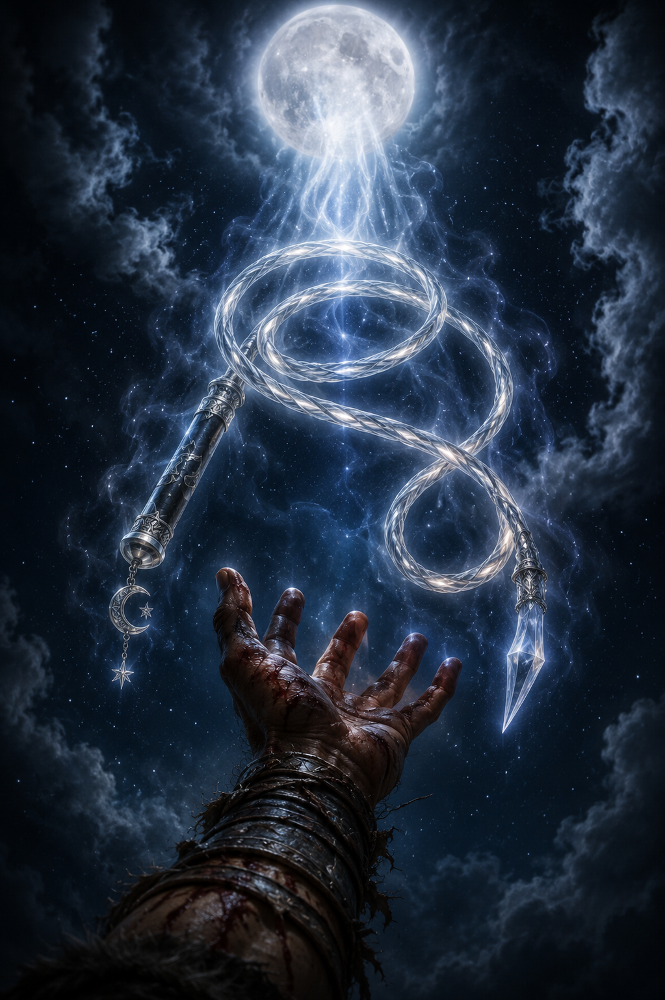
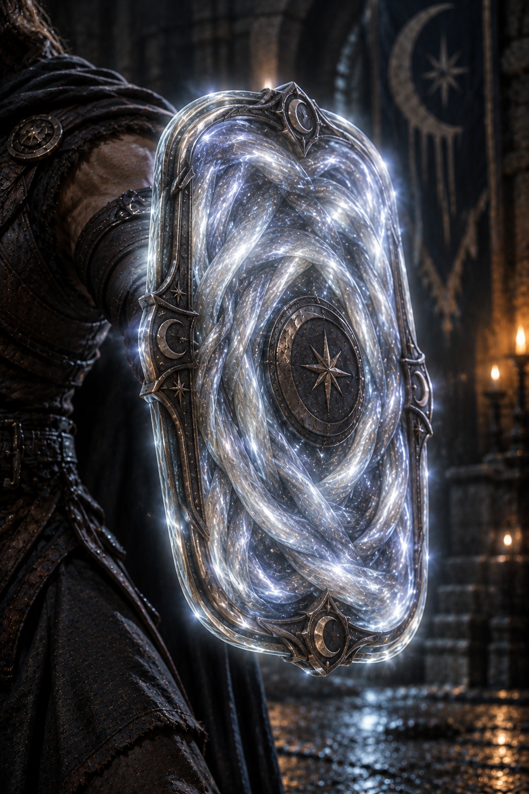

Legendary | Whip (requires attunement by Ikari)


This strange weapon appears to be a slender whip formed from braided strands of silver-white moonlight. Its handle is cool silver, etched with the phases of the moon, while the radiant strands of the weapon constantly drift and curl as though moved by an unseen breeze. When held by one chosen by Selûne, the Coil seems almost weightless, yet it strikes with the force of divine radiance.
You gain a +1 bonus to attack and damage rolls made with this magic weapon.
Coiled Moonshield
The Moonlight Coil can transform between a whip and a small, circular shield of condensed moonlight. As a bonus action, you may cause the whip to coil, transforming into a +1 shield. While in shield form, it functions as a normal shield and grants a +1 bonus to AC. As a free action, you may cause the shield to unravel, returning the Moonlight Coil to its whip form.
Moonlit Retribution.
Twice per short or long rest, when a creature you can see hits you with a melee attack while the Moonlight Coil is in shield form, you may use your reaction to cause the shield to erupt with brilliant moonlight. The attacking creature takes 2d6 radiant damage.
Starry Wisp
While the Moonlight Coil is in whip form, you may use one attack to release a tiny mote of divine moonlight. The mote functions as the Starry Wisp spell cast as a 1st-level spell, using Strength or Dexterity as your spellcasting ability for the attack. Add either your Strength or Dexterity to damage rolls of the spell.
Lunar Metamorphosis
As a bonus action, you may command the Moonlight Coil to transform into any melee weapon with which you are proficient. The weapon retains its +1 magical bonus to attack and damage rolls. Once you use Lunar Metamorphosis, you cannot use it again until you finish a short or long rest.
The transformed weapon lasts for 1 minute, until you dismiss the transformation as a free action, or until you transform the Coil into another form. The weapon deals its normal damage type and uses its normal properties as appropriate to its form.
"The Coil remembers the shape of every weapon that has ever been raised beneath the moon."
Fount of Moonlight
Divinely Granted – As Spell. Selûne's power flows through the bearer of the Moonlight Coil. The Fount of Moonlight does not require concentration.
"The moon does not ask the darkness for permission to shine."
The Moonlight Coil was divinely granted to Ikari by Selûne beneath the light of the full moon, during the desperate hardship of his encounter with the Dark Lady. As hope seemed lost and the darkness closed around him, a single thread of moonlight descended from the heavens and coiled itself into his waiting hand. From that moment onward, the weapon became a living symbol of Selûne’s favor, carrying her radiant power wherever Ikari walks beneath the night sky.
"When the darkness closed around Ikari, Selûne did not send a champion to save him—she placed her own light in his hand, and made him her chosen."